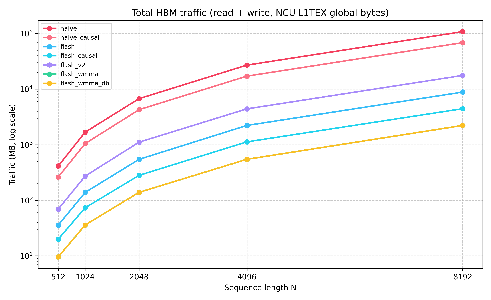

Writes full $S=QK^\top/\sqrt{d}$, softmax, then $PV$. Correct reference, worst IO.
Three launches mean the big score matrix ping-pongs through HBM. NCU tells that story in gigabytes.
From-scratch CUDA: IO-aware FlashAttention on a Tesla T4, with online softmax, shared-memory tiling, and O(N) HBM traffic to the output instead of materializing the full $N^2$ scores.
Causal Flash vs naive
N=8192
→
×3.71
pick a different N in the lab to update this
3 distinct kernel launches. Requires 3 full round-trips to global memory for the massive $N\times N$ matrix.
Fuses the operations into one kernel. Keeps the $\mathcal{O}(N^2)$ matrix inside fast on-chip SRAM.
This pulls from the same CSVs as the write-up. Choose N, flip kernel traces on or off, and use a log-scaled
latency axis so the flash_v2 line does not flatten everything else.


Writes full $S=QK^\top/\sqrt{d}$, softmax, then $PV$. Correct reference, worst IO.
Three launches mean the big score matrix ping-pongs through HBM. NCU tells that story in gigabytes.
Fixed $(B_r,B_c,d)$ tiles, fused softmax in registers, writes only $O$.
Online softmax rescaling keeps running $(m_i,\ell_i,O_i)$ in the register file while streaming $K_j,V_j$ tiles. This is the core IO win over naive.
Skips future $(K,V)$ tiles and masks on the diagonal. Fastest in my T4 numbers.
Not just masking logits. Skipping whole tiles means you never load K/V you will not use, so HBM reads drop by a lot compared to dense Flash at large $N$.
Smaller $B_r$ sounded clever; it bought extra outer-loop passes.
When $B_r$ is half as wide you sweep the whole $K/V$ stream twice as often. NCU reads land near ~2× Flash v1, and wall clock goes past naive at big $N$. Lesson learned: fusion without the right tile shape still loses.
FP16 Tensor Core matmul for $QK^\top$ blocks with FP32 accumulators on sm_75.
Lowest global reads in the table, competitive latency on the non-causal path. Causal tile skipping is not fused here yet, so FP32 causal Flash still wins on pure ms in these runs.
Clone, cd FinalProject, build flash_attn, run benchmarks/run_bench.sh and run_ncu_profile.sh. The numbers in the lab above come from that same CSV pipeline (data/results/).
Representative fragments (not whole translation units). Compare memory traffic vs register-resident softmax state.
// Kernel 2: row-wise softmax (data lives in HBM)
// Reads and writes the full N×N matrix S; O(N²) HBM traffic
__global__ void softmax_kernel(float* S, int N) {
int row = blockIdx.x * blockDim.x + threadIdx.x;
if (row >= N) return;
float* row_ptr = S + row * N;
// Pass 1: find row max (numerical stability)
float mx = -FLT_MAX;
for (int j = 0; j < N; ++j)
mx = fmaxf(mx, row_ptr[j]); // reads N floats from DRAM
// Pass 2: exponentiate and sum
float sum = 0.0f;
for (int j = 0; j < N; ++j) {
row_ptr[j] = expf(row_ptr[j] - mx); // read + write N floats to DRAM
sum += row_ptr[j];
}
// Pass 3: normalize
float inv = 1.0f / sum;
for (int j = 0; j < N; ++j)
row_ptr[j] *= inv; // read + write N floats to DRAM
}
// Total: ~4·N² float reads + ~2·N² float writes per softmax call// Online softmax rescale inside FlashAttention
// Runs in registers; the full N×N matrix never exists in HBM
for (int j = 0; j < Tc; ++j) {
// ... load K_j, V_j tiles into SRAM ...
// Compute S_row = Q[q_idx] · K_j^T / sqrt(d) (BC dot products)
float S_row[BC], m_tilde = -FLT_MAX;
for (int jj = 0; jj < bc_actual; ++jj) {
float dot = 0.0f;
for (int k = 0; k < D; ++k)
dot += Q_smem[t][k] * K_smem[jj][k];
S_row[jj] = dot * scale;
m_tilde = fmaxf(m_tilde, S_row[jj]);
}
// P_tilde = exp(S_row - m_tilde), l_tilde = sum(P_tilde)
float l_tilde = 0.0f;
for (int jj = 0; jj < bc_actual; ++jj) {
S_row[jj] = expf(S_row[jj] - m_tilde);
l_tilde += S_row[jj];
}
// Online rescale: no global memory traffic here
float m_new = fmaxf(m_i, m_tilde);
float alpha = expf(m_i - m_new); // rescale old contribution
float beta = expf(m_tilde - m_new); // rescale new contribution
for (int k = 0; k < D; ++k) {
float pv_k = 0.0f;
for (int jj = 0; jj < bc_actual; ++jj)
pv_k += S_row[jj] * V_smem[jj][k];
O_acc[k] = alpha * O_acc[k] + beta * pv_k; // update in registers
}
m_i = m_new;
l_i = alpha * l_i + beta * l_tilde;
}
// Final write: O[q_idx] = O_acc / l_i ← ONE write to HBM per rowgit clone https://github.com/batra98/me759-flashattention.git
cd me759-flashattention/FinalProject && mkdir -p build && cd build
cmake .. && make -j"$(nproc)"
./flash_attn --mode correctness --target flash --seq_len 2048
bash ../benchmarks/run_bench.sh ./flash_attn ../data/results
sudo bash ../benchmarks/run_ncu_profile.sh ./flash_attn ../data/results/hbm_traffic.csv
cd .. && python3 python/plot_results.py